Zerbitzari lokala
HTML dokumentu bat irekitzeko nabigatzailea izatea nahikoa da.
Oro har, frontend lengoaia bakarrik duen web-orri bat sortzen badugu, adibidez, HTML, CSS eta Javascript soilik erabiliz eraikitako web-orri bat, nabigatzailea bera gai izaten da behar bezala interpretatzeko, eta, beraz, ez dugu zerbitzari gehigarririk izan behar sisteman.
Egin dezagun froga bat
Lan tresnak prestatu:
- Sortu webgintza izeneko karpeta bat idazmahaian bertan, eta haren barruan index.html fitxategi bat.

Zerbitzaria(1): Proiektuaren karpeta eta lehen fitxategia (index.html) - Orain webgintza karpeta bat eta haren barruan index.html fitxategi bat izango dituzu. index.html fitxategiak zure nabigatzailearen ikonoa du orain.
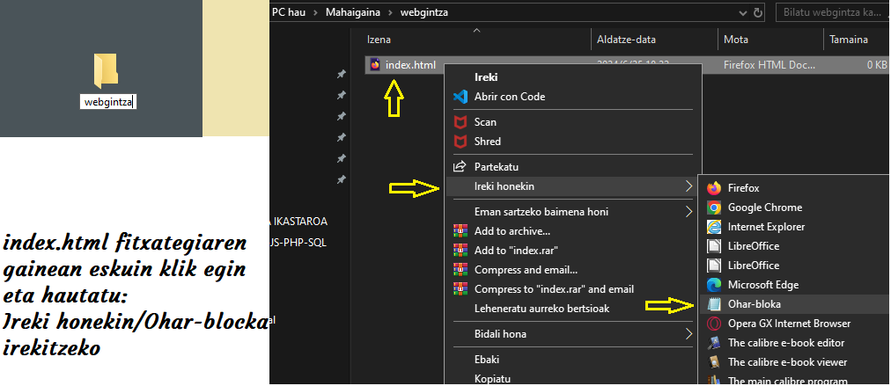
Zerbitzaria(2): Proiektuaren karpeta eta lehen fitxategia prest - Egin klik eskuineko botoiaz fitxategi berriaren gainean eta irekitzeko hautatu: Ireki honekin/Ohar-bloka
Zerbitzaria(3): Lehen fitxategia ireki - Idatzi bertan nabigatzaileari eman nahi dizkiogun aginduak:
<!DOCTYPE html> <html lang="es"> <head> <title>Lehen Agurra</title> </head> <body> <p>KAIXO GUZTIOI! ONGI AL ZAUDETE?</p> </body> </html> - Gorde aldaketak fitxategian eta itxi. Jo webgintza karpetara, ireki eta egin ezker klik bikoitza index.html fitxategiaren gainean. Nabigatzailea irekiko da eta beheko irudi hori ikusiko duzu agurrarekin:

Zerbitzaria(4): Idatzitako kodearen emaitza
GARRANTZITSUA: Nabigatzailearen fitxan, goiko aldean, erlaitzean, 'Lehen Agurra' ipintzen du, <title>eta </title> etiketekin guk agindu bezala, eta gorputzean 'KAIXO GUZTIOI! ONGI AL ZAUDETE? jartzen du paragrafo etiketen artean <p> eta </p>etiketen artean, 'KAIXO GUZTIOI! ONGI AL ZAUDETE?', komatxo artean jarriz agindu diogun bezala.
Eta hori guztia gure nabigatzailean dago, web-orri arrunt bat bezala. Proba dezakezue beste nabigatzaileren batekin, emaitza berdintsua lortuko duzue.
Oinarrizkoa: nabigatzailean fitxategi bat irekitzeko bi modu:
Saguaren eskuin botoiaz klik fitxategiaren gainean eta Ireki honekin/[nabigatzailea]hautatu
Fitxategian klik bikoitza egin saguaren ezker botoiaz eta sistema arduratzen da nabigatzailea irekitzeaz eta dokumentua kargatzeaz.
Horratx gure lehen web-orria!. Animo! hurrengo ataletan gehiago.
Hala ere, backend lengoaiak erabili behar baditugu, adibidez, PHP, beharrezkoak diren zerbitzariak instalatu behar ditugu gure ordenagailuan (edo zerbitzarian), horiek lengoaia interpretatzeko gai izan daitezen eta azken emaitza nabigatzailearen bidez ikusteko aukera izan dezagun. Nabigatzaileak, zerbitzari hori gabe, ez luke interpretatuko nabigatzailea.
GARRANTZITSUA: Tokiko web zerbitzari gisa ezagutzen da erreferentziazko ekipoari berari sare lokal batean gordetako web zerbitzari hori. Horrela, tokiko web zerbitzaria sare lokal bat osatzen duten ekipoetako edozeinetan instalatu daiteke. Instalazioa software baten bidez egiten da, eta software horrek aukera ematen du web orrian probatzeko eta nabigatzeko.
Tokiko zerbitzariak hainbat abantaila eskaintzen ditu, eta interesgarria da horiek ezagutzea.
Lehenik eta behin, aukera ematen du webgunean mota guztietako probak egiteko, hondatzeko beldurrik gabe, eta hori onura handia da erabiltzaileei esperientziarik onena emateko
Bigarrenik, ez da beharrezkoa domeinu bat kontratatzea 127.0.0.1 baita, eta disko gogorrak hosting funtzioak betetzen ditu.
Eta, hirugarrenik, aurreko puntuekin zuzenean lotuta, Interneteko webguneaz gain, tokiko zerbitzarian ere eduki daiteke biltegiratuta, euskarri gisa.
Beraz, gaur egun enpresek asko erabiltzen duten baliabidea da. Izan ere, modu azkar eta errazean zuzendu ditzakete akats horiek guztiak, baita egoki iritzitako aldaketak egin ere, webgune korporatiboan, urruneko behin betiko zerbitzarira igotzeko prest daudela erabat ziur egon arte.
XAMPP
Aurrerago ikusiko dugun bezala, JavaScript kode batzuk zerbitzari batetik deskargatzen direnean bakarrik lan egiten dute, eta zerbitzari teknologiak PHP bezala zerbitzari batean ostatatzea eskatzen dute funtzionatzeko.
Zer da Localhost?
Termino sinpleetan, funtsean pentsa dezakezu localhost ordenagailua bezala». Gogoan izan "ordenagailu hau" programari aplikatzen zaiola, eta ez fisikoki erabiltzen ari den ordenagailuari.
Maila teknikoagoan, localhost normalean IP 127.0.0.1 helbidean ebazten da, hau da, loopback helbidean. Bere garrantzia dela eta, "localhost" terminoa domeinu-izen erreserbatua da. Horrek esan nahi du, nahasketak saihesteko, ezinezkoa dela domeinu-izen bat «localhost» duena domeinu-izenaren lehen edo bigarren mailan erregistratzea.
Dokumentu mota horiekin lan egiteko, bi aukera daude:
- Web-ostatuko kontu bat eskuratu eta probak egiteko erabili
- Gure ordenagailuan zerbitzari bat instalatu
Garatzaile askok bigarren aukera baiatuta «proba lokaleko ingurunea» izeneko zerbait sortzen dute webguneak eraikitzeko. Funtsean, ingurune horrek zuzeneko webgune bat imitatzen du, baina guztiz independentea da erabiltzailearen ordenagailuan.
Gunea localhosten bakarrik existitzen denez, erraza da garatzaileentzat probak egitea ingurune horretan, benetako webgune batean zerbait apurtzeko beldurrik gabe. Gunea osaturik eta baliozkotuta dagoenean, garatzaileek beren localhost inguruneko webgunea benetako zerbitzari-ingurune batera mugi dezakete eta argitaratzeko.
Hona hemen hainbat zerbitzari lokal:
Ikastaro honetan XAMPP erabiliko dugu, batik bat sistema eragile guztietan instala daitekeelako.
Zer da XAMPP?
XAMPP Apacheren banaketa bat da, hainbat software libre barne hartzen dituena.
- X-k Linux, Windows eta Mac OS X sistema eragileak irudikatzen ditu.
- A-k Apache web zerbitzariari egiten dio erreferentzia. Zerbitzari hori kode irekikoa da, eta Apache Software Foundationek software libre gisa eskaintzen duen aplikazio orokorra da.
- M-k MySQL eta MariaDB datu-baseak irudikatzen ditu. Eurak dira munduko datu-baseak kudeatzeko sistema ezagunenak. Web zerbitzuetarako datuak biltegiratzeko balio du. MariaDB, MySQL proiektuaren adar bat da (fork).
- P-k zerbitzariaren aldean programatzeko PHP lengoaia irudikatzen du. Web orriak eta aplikazio dinamikoak sortzeko aukera ematen du. Plataformatik independentea da.
- P-k sistemaren administrazioan, web-garapenean eta sare-programazioan erabiltzen den Pearl programazio-lengoaiari egiten dio erreferentzia. Web dinamikoak programatzeko ere balio du.
XAMPPen aplikazio-eremuak
XAMPP zerbitzaria azkar eta erraz instala daiteke Linux, Windows eta Mac OS X sistema eragileetan, nork bere frogak egiteko sistema gisa, fitxategi exekutagarri bakar batekin. XAMPPen Software-paketeak edozein web-zerbitzaritan erabiltzen diren osagai berberak ditu, eta, horrela, garatzaileek proiektuak bee konputagailuan bertan testatu eta sistema errealetara erraz transferitu ditzakete. Dena dela, XAMPP ez da gomendatzen zerbitzari publiko gisa, zenbait muga baitauzka segurtasunari dagokionez.
XAMPP nola instalatu pausoz pauso
Guk XAMPP paketearen instalazioa Windowsen egingo dugu. Linux edo Mac OS X sistema eragileetan nahi izanez gero, instalazio-prozesua antzekoa da.
1. urratsa: Deskargatu aplikazioa
PHP 5.5, 5.6 edo 7 duten bertsioak doan deskarga daitezke Apache Friends proiektuaren orrialdetik: https://www.apachefriends.org/es/download_success.html
2. urratsa: .exe fitxategia exekutatu
Paketea deskargatu ondoren, .exe fitxategia exekutatu dezakezu bertan klik bikoitza eginez.
3. urratsa: birusen aurkako programa desaktibatu
Birusen aurkako programa desaktibatzea gomendatzen da, osagai guztiak instalatuta egon arte, instalazio-prozesua oztopatu baitezake.
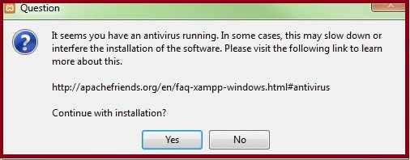Zerbitzaria(6): birusen aurkako segurtasuna kendu 4. urratsa: UAC desaktibatu
Erabiltzaile-kontuen kontrolak (User Account Control, UAC) instalazioan eragin dezake, C:\disko unitateko idazketa-eskubideak mugatzen baititu.
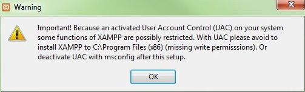Zerbitzaria(7): '.exe' erabiltzaile kontuen kontrola desaktibatu 5. urratsa: instalazio-laguntzailea martxan jarri
Urrats horiek gainditu ondoren, XAMPP instalatzeko laguntzailearen hasierako pantaila agertuko da. Instalazioaren konfigurazioak doitzeko, egin klik Next frekuentzian.
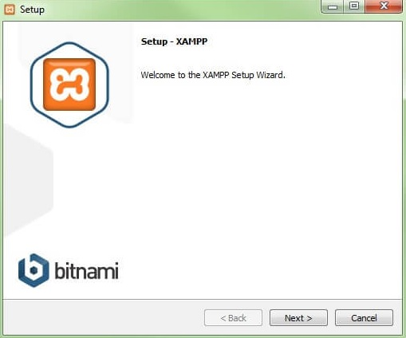Zerbitzaria(8): Instalazio laguntzailea martxan jarri 6. urratsa: softwarearen osagaiak hautatu
XAMPPren software-paketearen osagai isolatuak instalaziotik kanpo utz daitezke, «Select components, Components, Reguls» errubrikan. Proba lokaleko zerbitzari baterako konfigurazio estandarra gomendatzen da, eta horrekin instalatzen dira eskuragarri dauden osagai guztiak. Konfirmatu hautaketa Next etiketa sakatuz. "Select Components" elkarrizketa-koadroan, instalatuko diren osagaiak hauta edo deshauta daitezke.
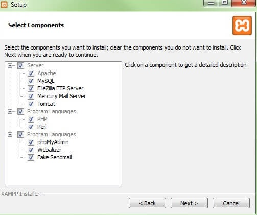Zerbitzaria(9): Softwarearen osagaiak hautatu 7. urratsa: Instalaziorako direktorioa hautatu
Urrats honetan paketea instalatuko den direktorioa aukeratzen da. Konfigurazio estandarra aukeratu bada, XAMPP izena duen karpeta bat sortuko da C:\delakoan.
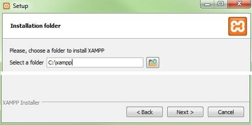Zerbitzaria(10): Softwarearen instalazio-direktorioahautatu 8. urratsa: Instalazio-prozesua hasi
Laguntzaileak hautatutako osagaiak atera eta aukeratutako direktorioan gordeko ditu, minutu batzuk iraun dezakeen prozesu batean. Instalazioaren aurrerabidea karga-barra berde gisa erakusten da. Ondoren, hautatutako software-elementuak deskonprimatzeko eta aurredoikuntzetan zehaztutako direktorioan instalatzeko instalazio-prozesua hasiko da.
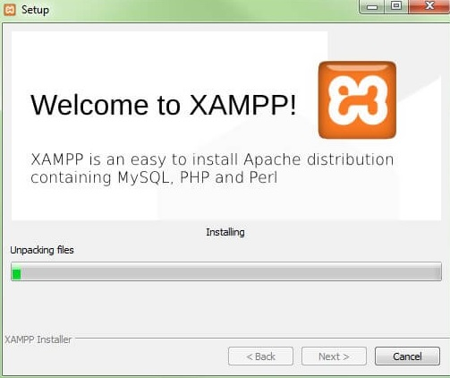Zerbitzaria(11): Instalazio prozesua hasi 9. urratsa: Firewall konfiguratu
Instalazio-prozesuan zehar, ohikoa da laguntzaileak Firewall-en blokeoaren berri ematea. Elkarrizketa-leihoan, Apache zerbitzaria sare pribatu batean edo lan-sare batean komunikatzeko laukitxoak markatu ditzakezu.
Gogoratu ez dela gomendatzen sare publiko batean erabiltzea.
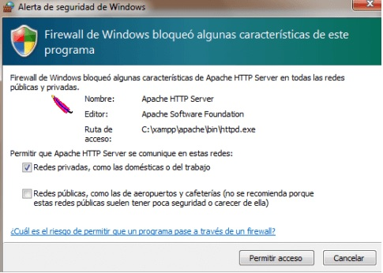Zerbitzaria(12): Gure 'Firewal' konfiguratu 10. urratsa: Instalazioa itxi
Osagai guztiak atera eta instalatu ondoren, morroia itxi dezakezu Finish) teklarekin. Kontrol-panelera berehala sartzeko, egin nahi dugun galdetzen duen laukia markatu besterik ez dugu egin behar.
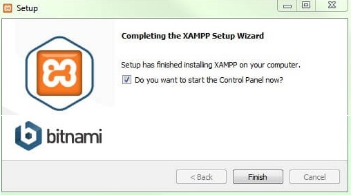Zerbitzaria(13): Instalazioa bukatu eta itxi
XAMPPen kontrol-panela
Kontrol-panelaren erabiltzaile-interfaze garbian ekintza guztiak protokolatzen dira eta moduluak banaka aktibatu edo desaktibatu daitezke klik soil batekin. Gainera, hainbat erabilera daude, hala nola:
Config: XAMPP eta beste osagai isolatu batzuk konfiguratzeko.
Netstat: tokiko ordenagailuan funtzionatzen ari diren prozesu guztiak erakusten ditu
Shell: UNIX komandoen leiho bat jaurtitzen du
Explorer: ireki XAMPP karpeta Windowsen arakatzailean
Zerbitzuak: martxan dauden zerbitzu guztiak erakusten ditu
Help: erabiltzaileen foroetarako estekak ditu
Quit: kontrol-paneletik irteteko erabiltzen da
Kontrol-panelean, erabiltzaileak bereizita has edo buka ditzake moduluak.
Nola jarri martxan moduluak
Goiko aldean, XAMPP moduluak banaka hasi edo eten daitezke, Start, Stop eta Actions komandoen bidez. Aktibatu diren moduluak berdez markatuta agertzen dira.
Akats batengatik horietako bat hasterik ez badago, gorriz markatuta agertuko da. Beheko aldean protokoloan jasotako errore-jakinarazpenek errorearen kausak aurkitzen laguntzen dute.
Doitu XAMPP
Apacheren erabileran maiz gertatzen diren akatsen kausa bat blokeatutako ataka bat da. XAMPP konfigurazio estandarrak 80 portu nagusia eta SSL 443 portua esleitzen dizkio web zerbitzariari, baina beste programa batzuek blokeatzen dituzte. Aurreko irudian Skype berehalako mezularitza programarekin gatazka bat agertzen da. Programa hori 80 eta 443 portuak erabiltzen ari da, eta, beraz, zerbitzaria ezin da hasi. Hiru irtenbide posible daude:
- a. Aldatu portua Skypen: horretarako, Skype irekitzen da, eta, bertan, Tresna elektronikoak > Aukerak > Aurreratua> Konexio informatikoa laukitxoa desmarkatzen da. Lauki horretan, Erabili 80 eta 443 atakak sarrerako konexio elektrikoetarako.
- b. Aldatu ateen konfigurazioak Apache-n: egin klik Apache moduluaren konfigurazioan (Config) eta ireki PD.CONF eta PD-SSL.CONF. fitxategiak. Pd.conf-en 80. portua erabili nahi duzun portuarekin aldatzen da, eta gauza bera egiten da pd-ssl.conf-en, 443 portuarekin. Gorde artxiboak. Eskuinaldean dagoen Config «Doitu portuak» teklan, egindako aldaketak konf fitxategietan sartu ahal izateko.
- c. Skype amaitu: Skyperekin gatazkarik ez izateko metodorik errazena da itxi eta berriro hastea, Apache zerbitzaria martxan dagoenean
Errore-jakinarazpenak gorriz agertzen dira Kontrol Panelean, gatazka konpontzeko argibideekin
Moduluak nola administratu
Modulu bakoitzerako "Admin" funtzio bat dago.
- Apache zerbitzariaren "Admin" tekla sakatzean, zerbitzariaren web-helbidera sartuko zara, ekipoaren nabigatzaile estandarraren bidez. XAMPPren host lokaleko orri nagusira bideratuko zaituzte, hau da, makina lokalaren domeinura. Dashboardak informazio erabilgarria duten webguneetarako esteka ugari ditu, baita open source BitNami proiekturako ere. Proiektu horrek doako hainbat aplikazio eskaintzen ditu XAMPPrentzat, hala nola WordPress edo beste CMS batzuk. Orri nagusi honetan sartzeko, sartu localhost/dashboard/helbidea.
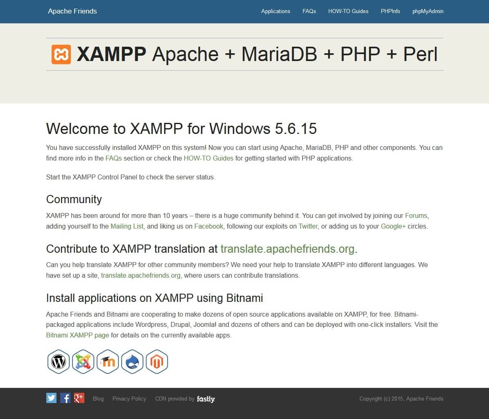
Zerbitzaria(15): XAMPPen admin hasierako azaleko orria - Datu-baseko "Admin" tekla sakatuz gero, phpMyAdmin irekiko da. Bertan, XAMPPrekin probatu nahi den web proiektuaren datu-baseak administratu daitezke. MySQL datu-baserako administrazio-interfazera ere sar gaitezke localhost/phpmyadmin/helbidean. Datu-baseak phpMyAdmin-en kudeatzen dira, Datu-basea moduluko Admin Admin botoian eskuragarri.
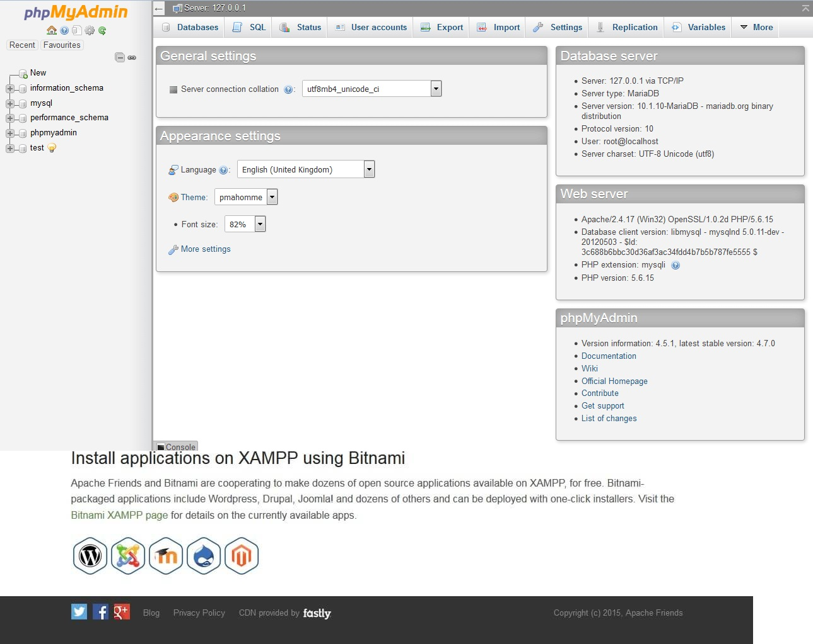
Zerbitzaria(16): XAMPPen datu basea kudeatzeko `PHPMyAdmin'
XAMPP zerbitzariaren instalazioa egiaztatu
Htdocs karpeta
Instalazioaren jarraibideak hitzez hitz bete badituzu, zure zerbitzari lokala Xampp helbide honetan egongo da: C:\Xampp instalatuta egongo da.
- Sartu hemen: Tokiko diskoa (C:) > Xampp.
- Bilatu htdocs karpeta.
- Ireki htdocs karpeta. Bertan gordeko ditugu gure garapen guztiak. Izan ere, berau dugu zerbitzari lokalaren erroko karpeta.
- Kokatu htdocs karpetaren barruan, gorago sortu dugun eta idazmahaian gorde dugun webgintza karpeta index.html fitxategiarekin.
- Orain ireki nabigatzailea eta helbide-barran idatzi localhost/webgintza sartu eta lehen ikusi dugun irudi berbera agertu beharko luke pantailan. Oraingoan helbide-barran localhost/webgintza agertzen zaigu, zerbitzaritik bidalitako informazioa denaren seinale. Aurreko adibidean egin dugunarekin alderatzen baduzu, hura idazmahaitik (desktop) jasotakoa dela ikusiko duzu.
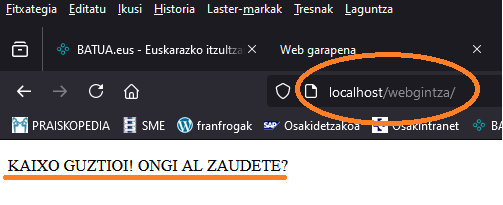
Zerbitzaria(17): XAMPPekin lehen froga